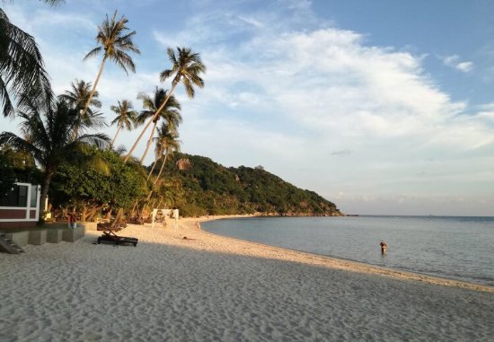

Back to Map
Catbalogan City

Catbalogan Park

Buri Beach
Pinipisakan Falls
Description:
Ang Catbalogan (pagbigkas: kat•ba•ló•gan) ay isang lungsod sa lalawigan ng Kanlurang Samar,
Pilipinas. Ayon sa senso ng 2020, ito ay may populasyon na 106,440 sa may 23,107 na kabahayan.
Taong 2017 sa pagbabago ng Pederalismo sa Pilipinas ang Catbalogan ang (kapitolyo) ng Eastern Visayas.